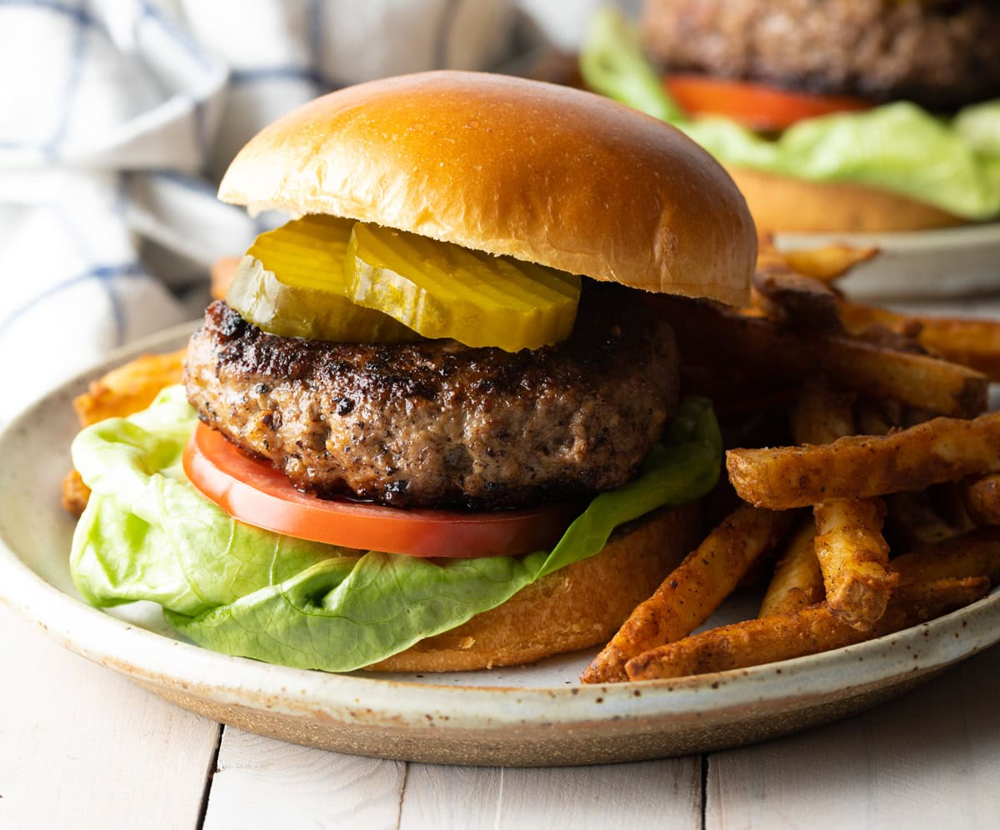

Hamburger

Description
A hamburger is a popular and versatile sandwich consisting of a seasoned, grilled, or pan-fried ground beef patty placed between two halves of a soft bun. Typically accompanied by a variety of toppings, a classic hamburger might include crisp lettuce, juicy slices of tomato, thinly sliced onions, tangy pickles, and melted cheese. Condiments like ketchup, mustard, mayonnaise, or special sauces add flavor, while optional extras like bacon, avocado, or jalapeños provide additional texture and taste.
Ingredients
- Ground beef
- Salt
- Black pepper
- Burger buns
- Vegetables
- cheese
Steps
- In a bowl, gently mix the ground beef with a pinch of salt and pepper. Avoid overmixing to keep the patties tender.
- Divide the beef into four equal portions and shape each into a patty, about ¾-inch thick. Make a small indent in the center of each patty with your thumb to prevent it from puffing up during cooking.
- Preheat your grill to medium-high heat and lightly oil the grates.
- Cook the patties for about 4-5 minutes per side for medium doneness (adjust time for desired doneness).
- Heat a skillet or griddle over medium-high heat and add a small amount of oil or butter.
- Cook the patties for 4-5 minutes per side, flipping once.
- Add a slice of cheese on top during the last minute of cooking, if desired, and cover the pan to melt the cheese.
- Place the bottom half of each bun on a plate.
- Add a leaf of lettuce, a slice of tomato, and the cooked patty.
- Top with sliced onion, pickles, and any additional toppings you like.
- Spread condiments (ketchup, mustard, mayonnaise, or special sauce) on the top half of the bun and place it on top.
- Serve the burgers immediately with your choice of sides, such as French fries, onion rings, or a fresh salad.